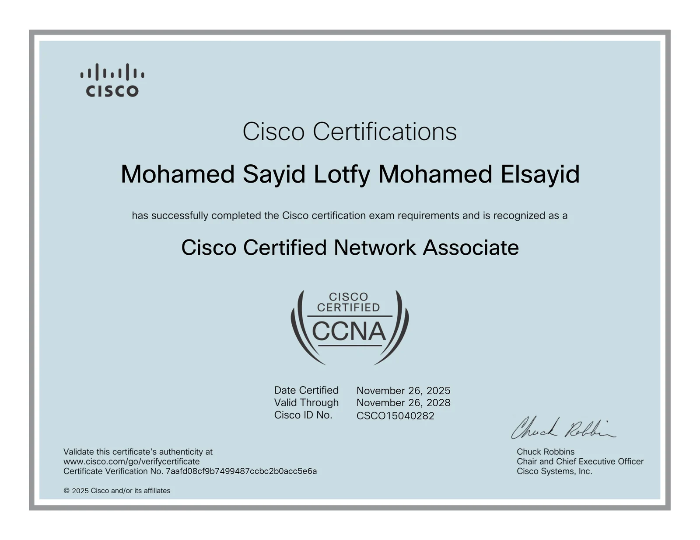
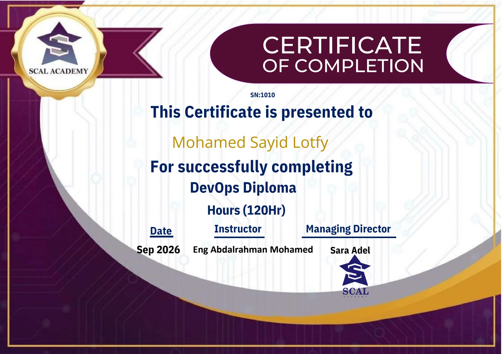
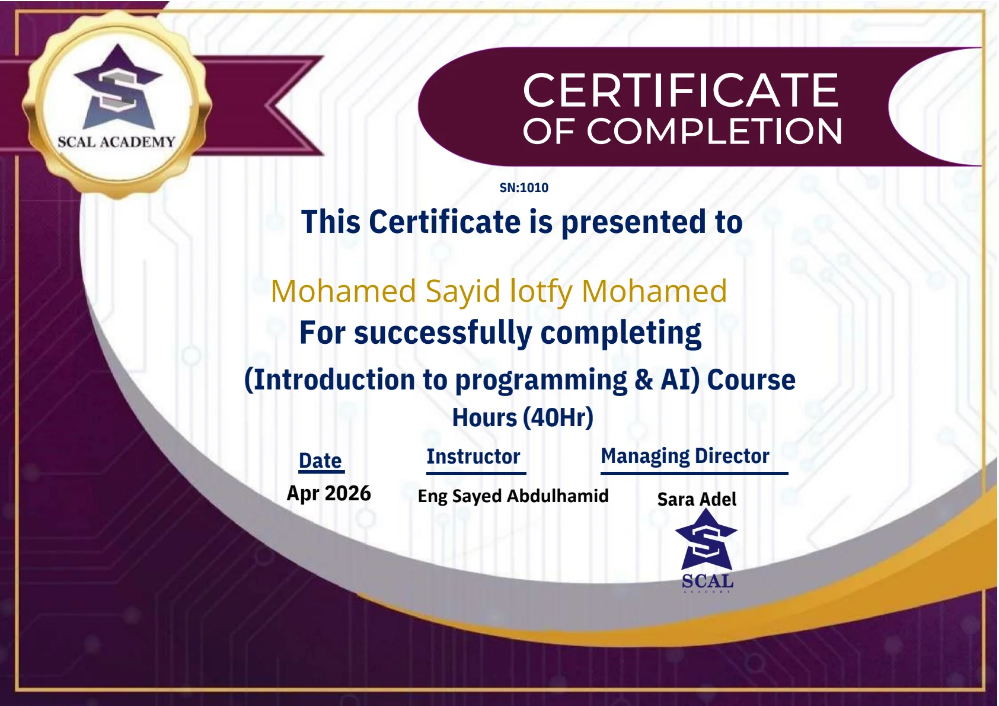
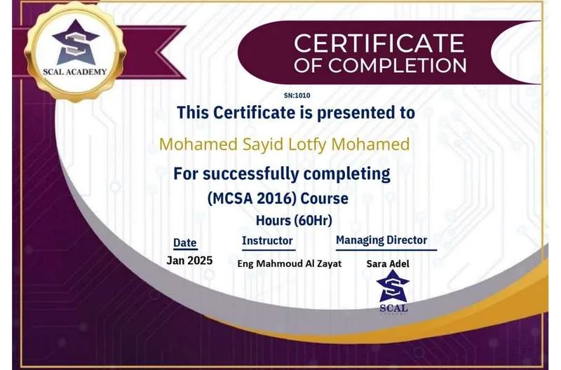
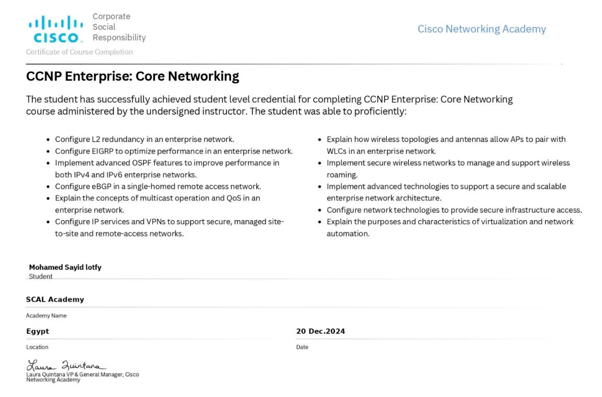
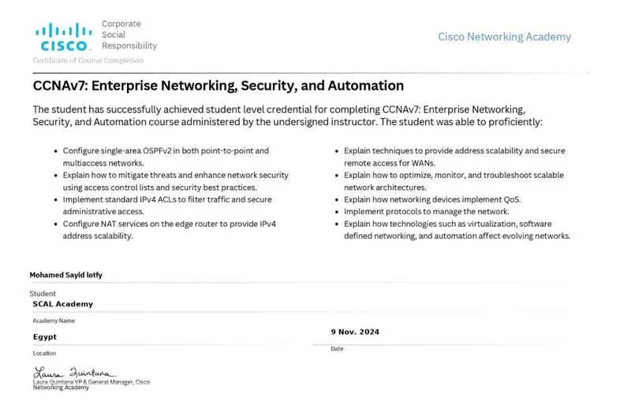
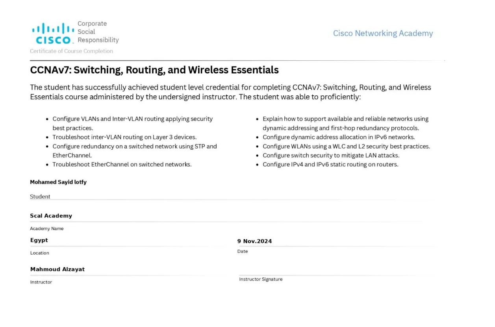
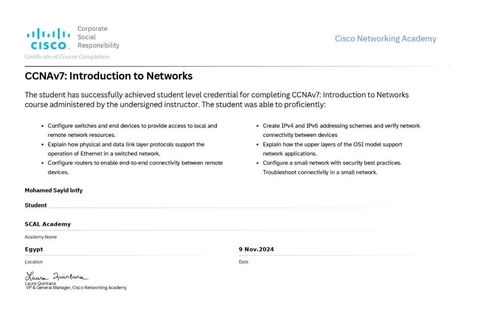

Infrastructure & Security Engineer · IT Operations Lead · Cisco Networking · Virtualization
Infrastructure & Security Engineer with 5 years of hands-on experience across enterprise, healthcare, and financial-sector IT. Currently leading IT operations across 5 branch sites with a 5-person team, specializing in Cisco networking (CCNA), Windows Server/Active Directory, Hyper-V/VMware, and Fortinet/pfSense security.
Currently serving as IT Operations Manager at Viion, leading IT operations and security across 5 branch sites with a 5-person team. Proven track record migrating legacy infrastructure to Hyper-V HA clusters, automating 200+ Cisco network devices via Python and Ansible, deploying immutable backup repositories (Veeam RTO < 2h), and hardening endpoint security (patch compliance from 40% to 98%).
Brings specialized Healthcare IT experience from Main Sharia Association Hospital (HIS/PACS network segmentation behind Fortinet/Sophos firewalls with 99%+ uptime) alongside international consulting and infrastructure projects for domestic and overseas clients.
Feb 2025 – Present
- Redesigned enterprise network with Layer 3 switching, OSPF, VLAN segmentation, and perimeter firewalls, bringing weekly downtime to near zero.
- Migrated 6 legacy Windows Server 2008 R2 servers to a Hyper-V HA cluster on Windows Server 2019.
- Deployed enterprise GPO baseline (USB lockdown, BitLocker, WSUS) that raised patch compliance from 40% to 98%.
- Automated configuration backups and audits for 200+ Cisco devices using Python (Netmiko/Paramiko) and Ansible.
- Deployed Veeam Backup & Replication with immutable repositories across 5 sites with an RTO under 2 hours.
- Grew from owning infrastructure and security at a single site to leading IT operations across all 5 branches, managing a 5-person technical team.
- Led vendor evaluation & negotiation (Fortinet vs. Sophos, Google Workspace vs. Microsoft 365) and authored an IT governance matrix covering access permissions for 16+ organizational roles.
- Authored IT downtime and disaster recovery playbooks with escalation matrices, plus automated daily infrastructure checklists via Google Apps Script.
- Deployed Windows Server 2019 and Active Directory from scratch for 100+ users (OU hierarchy, Group Policy, DNS, DHCP) with zero downtime during rollout.
- Isolated medical systems (HIS, PACS, laboratory equipment) on dedicated VLANs behind Fortinet/Sophos firewall ACLs, cutting unauthorized access incidents by 90%.
- Built Hyper-V virtualization for critical hospital services with off-site replication, achieving 99%+ system uptime.
- Rebuilt the network core with Layer 3 switches, OSPF, and RSTP, completely eliminating broadcast storms.
- Established robust backup schedules, tiered access controls, and a formal incident response process.
- Provided advanced remote and on-site support for enterprise hardware, software, and network issues, resolving escalated technical tickets.
- Introduced an ITIL-based helpdesk workflow with defined SLAs, multi-tier escalation, and monthly performance reporting to management.
2020 – Present
- Telecom Egypt (WE): Server refresh project to modernize, update, and optimize enterprise server infrastructure.
- Bank of Alexandria (Cairo Branch): Core member of the branch IT infrastructure build team; responsible for enterprise switch deployment, structured cabling coordination, and connectivity verification.
- Art Topia (Canada) & 4 Global Companies: Managed remote technical support and system administration tickets via secure remote-access tools for software, hardware, and network troubleshooting.
- Remote IT Support (Argentina): Delivered end-to-end remote infrastructure and operating systems technical support for an enterprise in Argentina.
- Healthcare Facilities & Medical Centers (Egypt): On-demand infrastructure and network architecture consulting for private healthcare facilities.
- Aesthetic Medical Center (Dokki, Cairo): Turnkey network design, structured cabling, VLAN segmentation, and perimeter security setup.
- Specialized Medical Clinic: Successfully planned and executed mail server migration to a modern cloud platform with zero data loss.
Native Proficiency
Advanced Proficiency
Permanently Exempt
Open to
Opportunities
Open to new opportunities in Network Administration, System Administration, IT Infrastructure, Medical IT, HIS, or Cloud roles. Available immediately.
Legacy flat network with no segmentation causing broadcast storms, bottlenecks, and security gaps. Devices shared a single VLAN, making lateral movement trivial for any internal threat. Downtime was averaging 3–4 hours per week.
Redesigned the entire network topology using Layer 3 switches with inter-VLAN routing. Deployed Cisco enterprise routers and firewalls, configured OSPF for dynamic routing, implemented VLANs per department, and established a secure VPN gateway for remote staff.
- Network throughput increased by 75%
- Weekly downtime reduced to near zero
- Lateral movement threats eliminated via VLAN isolation
- Remote access secured with split-tunnel VPN
Critical medical systems — including HIS (Hospital Information System), PACS imaging, and lab equipment — were running on unmanaged, unsecured infrastructure. Frequent outages disrupted patient care workflows. No disaster recovery plan existed.
Deployed Windows Server 2019 with Active Directory for centralised access control. Segmented medical devices on an isolated VLAN with strict firewall ACLs. Implemented Hyper-V virtualisation for critical services and established a backup & disaster recovery plan with off-site replication.
- System uptime reached 99%+
- Unauthorised access incidents dropped by 90%
- Recovery time objective (RTO) reduced to under 2 hours
- Full VLAN isolation for all medical devices
Workstations across multiple office locations had inconsistent security configurations, outdated OS patches, and no centralised policy enforcement. Shadow IT and unauthorised USB usage were common, creating significant data exfiltration risk.
Rolled out a comprehensive Group Policy Object (GPO) baseline across all domain-joined machines — disabling USB storage, enforcing password complexity, enabling BitLocker encryption, and locking down local admin rights. Deployed WSUS for automated Windows Update management across all sites.
- 100% policy compliance across all endpoints
- USB-based incidents eliminated completely
- Patch compliance improved from ~40% to 98%
- Zero privilege escalation incidents post-deployment
Physical servers running Windows Server 2008 R2 were approaching end-of-support, running on ageing hardware with no redundancy. Single points of failure were risking business continuity. Expanding physical infrastructure was cost-prohibitive.
Designed and executed a P2V (Physical-to-Virtual) migration plan using Microsoft Hyper-V and VMware. Migrated 6 physical servers to virtual machines on a high-availability cluster, upgraded all VMs to Windows Server 2019, and configured live migration for zero-downtime maintenance windows.
- Eliminated 6 physical servers, reducing hardware costs by 60%
- Server provisioning time cut from days to minutes
- High-availability cluster achieved 99.9% uptime SLA
- Simplified backup via VM snapshot automation
A sprawling flat network was causing massive broadcast storms, leading to daily intermittent connectivity drops and IP conflicts across departments. Frequent network loops were crippling core medical applications.
Redesigned the topology using a hierarchical distribution model. Deployed Cisco L3 core switches, routing between cleanly segmented VLANs via OSPF. Implemented Rapid Spanning Tree Protocol (RSTP) to eliminate loop risks intrinsically.
- Broadcast storms eradicated; isolated securely to logical departments
- Network downtime reduced by 99%
- Improved inter-department routing efficiency
- Future-proofed OSPF base mapping established for future scalability
Patients, guests, and administrative staff were connecting to the same unsegmented network. This open ecosystem posed severe security and compliance risks to unencrypted patient records and medical imaging devices (PACS).
Deployed and configured Fortinet/Sophos Perimeter Firewalls. Restructured wireless infrastructure enforcing WPA3 Enterprise for doctors and a restricted Captive Portal for patients isolated entirely onto a separate internet-only VLAN.
- Guests effectively firewalled from clinical databases (100% Policy Compliance)
- Traffic shaping prioritized medical data streams over guest bandwidth
- Eliminated unauthenticated access to the physical network ports
- Intrusion/Malware blocking via Unified Threat Management (UTM)
Behind the scenes, we're auditing infrastructure, planning migrations, and engineering the next major success story. Check back later.
Mohamed completely restructured our multi-site network infrastructure across 5 branch sites with Layer 3 switching, OSPF routing, and automated configuration backups for 200+ Cisco devices. Weekly network downtime dropped to near zero, and GPO patch compliance reached 98%.
Stabilized critical hospital infrastructure (HIS and PACS imaging) with isolated medical VLANs behind Fortinet and Sophos firewalls. Achieved 99%+ uptime for emergency workflows and deployed off-site Hyper-V replication with an RTO under 2 hours.
Member of the infrastructure engineering deployment team for Bank of Alexandria (Cairo Branch). Responsible for enterprise switches, structured cabling coordination, and connectivity verification with field technicians to meet stringent banking standards.
Managed international remote technical support and system administration for Art Topia (Canada) and 4 global companies. Provided remote diagnostics, operating systems troubleshooting, and network problem resolution consistently within SLA.
Currently gathering and verifying quarterly peer reviews and stakeholder endorsements from ongoing enterprise, banking, and healthcare IT deployments...
Shareholders in Certificates
Special thanks to the contributors, mentors, and shareholders who supported the journey to achieving these professional certifications. Your guidance and support have been invaluable in reaching these milestones.







